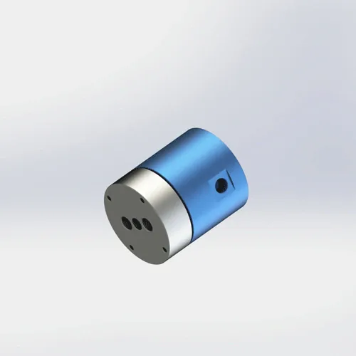

Dual-Kanal M5 Gewinde Drehdurchführung für pneumatische und leichte Fluidanwendungen. Kompaktes Design, PTFE Verbunddichtung, AL6061 Gehäuse. Zwei unabhängige Kanäle für mikroelektronische Drehteller, Mini-Dispensierköpfe und kleine Zweikanal-Automatisierung. Versand innerhalb von 7 Tagen.
BP-2P-08-0001 ist eine zweikanalige M5 Gewinde Drehdurchführung für pneumatische Miniaturanwendungen. Der M5 Gewinde passt zu kleinen metrischen pneumatischen Anschlüssen, die in europäischen und asiatischen Automatisierungsgeräten üblich sind. Das AL6061 Gehäuse hat ein ungefähres Gewicht von 0.39 kg und eignet sich somit für kleine Drehtische, die von Schrittmotoren angetrieben werden. Die PTFE Composite Dichtung bietet chemische Beständigkeit gegenüber Luft, Wasser und Kühlmittelmedien.
| Modellnummer | BP-2P-08-0001 |
|---|---|
| Anzahl der Kanäle | 2 Kanäle (2-in-2-out) |
| Einbauart | M5 Gewinde |
| Maximaldruck | 1 MPa (10 bar / 145 psi) - Drehzahl reduzieren auf 0.7 MPa für kontinuierliche Wassernutzung |
| Maximale Geschwindigkeit | 200 RPM — Drehzahlverringerung zu 150 RPM für kontinuierliches Wasser oder Kühlmittel |
| Gehäusematerial | AL6061 |
| Dichtungstyp | PTFE Verbunddichtung |
| Kompatible Medien | Luft, Wasser, Kühlmittel, leichtes Hydrauliköl (ISO VG 32 max) |
| Betriebstemperatur | -20°C nach +80°C |
| Ca. Gewicht | 0.39 kg |
| Bescheinigungen | ISO 9001:2015, CE, RoHS |
| Garantie | 12 Monate |
AL6061 Aluminiumgehäuse: 6061-T6 Aluminiumlegierung mit Streckgrenze 276 MPa und Dichte 2.70 g/cm3. Die eloxierte Oberfläche bietet Korrosionsbeständigkeit für intermittierende Wasser- und Kühlmitteleinwirkung. Bei 0.39 kg eignet sich das Gehäuse für kleine schrittmotorisch angetriebene Drehtische, bei denen es auf Trägheit ankommt. Nicht empfohlen für das kontinuierliche Eintauchen in aggressives Kühlmittel ohne zusätzliche Oberflächenbehandlung.
PTFE Verbunddichtung: Polytetrafluorethylen mit Glasfaser und Graphitfüllstoff. Selbstschmierend, chemisch inert und für -200°C bis +260°C ablegbar. Das Dual-Kanal-Design verwendet zwei unabhängige Dichtungsringe, einen pro Kanal, so dass keine Kreuzkontamination zwischen den beiden Luftkreisläufen gewährleistet ist. Der FKM O-Ring sorgt für eine statische Abdichtung an der Gehäuseschnittstelle.
M5 Gewindenote: M5 × 0,8 metrisches Feingewinde bietet eine kompakte Verbindung für 4 mm und 6 mm pneumatische Rohre Push-to-Connect-Anschlüsse. Die kleine Gewindegröße begrenzt den maximalen Durchfluss im Vergleich zu G1/8 - überprüfen Sie Ihre CFM-Anforderung, bevor Sie sie angeben. Für höhere Durchfluss, Aufrüstung zu BP-2P-0002 (G1/8, 4mm Öffnung).
BP-2P-08-0001 ist für Miniatur-Dualkanal-Pneumatikanwendungen konzipiert, bei denen metrische M5-Anschlüsse und kompakte Abmessungen erforderlich sind. Das 0.39 kg Gehäuse und die kompakte Gewindemontage passen zu kleinen Elektronik- und Präzisionsgeräten. Dieses Modell kann geeignet sein, wenn die Kanalzahl, die Montage, das Medium, der Druck, die Geschwindigkeit und die Temperaturgrenzen den Maschinenanforderungen entsprechen.
Die richtige Installation verlängert die Dichtungslebensdauer von 6 Monaten auf 12+ Monate. Die häufigste Ursache für einen frühen Ausfall von BP-2P-08-0001 ist das Überziehen des M5 Gewindeanschlusses, der das leichte AL6061-Gehäuse knackt. Befolgen Sie diese Schritte für einen zuverlässigen Betrieb.
Bestätigen Sie, dass das passende Gewinde Ihrer Ausrüstung der Drehdurchführung Gewinde-Spezifikation entspricht. BP-2P-08-0001 verwendet M5 × 0,8 metrisches Feingewinde. Erzwingen Sie keinen imperialen oder NPT-Adapter — das kleine M5 Gewinde hat einen begrenzten Materialeinsatz und wird das AL6061-Gehäuse abstreifen. Herunterladen Sie die 2D-Zeichnung für genaue Gewindeabmessungen, Tonhöhe (0.8 mm) und Toleranzen. Stellen Sie sicher, dass Ihre pneumatischen Anschlüsse M5-kompatibel sind, bevor Sie bestellen.
Verwenden Sie PTFE-Band (2-3 Wicklungen) oder anaerobe flüssige Gewindedichtmittel auf dem M5 männlichen Gewinde. Handstraffung plus maximal 1/8 Umdrehung. Das Überziehen reißt das AL6061-Gehäuse oder streift das feine M5-Gewinde ab. Spezifikation des Drehmoments: 2–3 N·m für M5. Verwenden Sie einen kleinen Drehmomentschlüssel - "Finger fest" ist oft genug für M5. Wenn Sie spüren, dass der Widerstand stark zunimmt, hören Sie auf - das Gewinde hat einen Boden oder das Gehäuse biegt sich.
Wenn Ihr Modell eine Registerkarte Verdrehsicherung enthält, sichern Sie es mit einem lockeren Stift oder Schlitz an einem festen Punkt. Lassen Sie das Gehäuse niemals frei mit der Welle rotieren — der Versorgungsschlauch wird sich verdrehen und die Dichtung wird ein Rückdrehmoment erfahren, das den Verschleiß beschleunigt. Für M5-Gewinde-Gelenke ohne Verdrehsicherungslasche verwenden Sie eine Halterung, die um den Gehäusesechs oder die zylindrische Oberfläche geklemmt ist. Spannen Sie nicht so fest, dass Sie das Gehäuse verformen.
Verwenden Sie flexible Schläuche (nicht starres Rohr), um beide stationären Einlass-Anschlüsse an die Luftversorgung anzuschließen. Starre Rohre übertragen Vibrationen und thermische Ausdehnung direkt auf die Drehdurchführung und belasten die Dichtung. Installieren Sie vor jedem Einlass einen 40-Mikrometer-Filter, um die PTFE Dichtung vor Trümmern zu schützen. Für Wasser oder Kühlmittel fügen Sie einen Y-Strainer (60 Mesh) hinzu, um Partikelschäden zu vermeiden. Verwenden Sie 4 mm oder 6 mm pneumatische Schläuche mit M5 Push-to-Connect-Anschlüsse.
Laufen Sie bei niedrigem Druck (0.2 MPa) und niedriger Geschwindigkeit (50–100 RPM) für 5 Minuten ohne Belastung auf beiden Kanälen. Dieser bettet die PTFE Dichtungen gegen die Schaftoberfläche und schafft so eine mikroglatte Kontaktzone. Achten Sie auf Leckagen an den Schnittstellen von Gewinde und Dichtung. Wenn trocken, allmählich auf den Betriebsdruck erhöhen und Geschwindigkeit über 10 Minuten. Überspringen des Run-in ist die # 2 Ursache des frühen Dichtungsversagens - die Dichtung braucht Zeit, um sich an die Oberfläche der Welle anzupassen.
Vollabmessungen, Toleranzen, gewindetechnische Daten (M5 × 0,8), Anforderungen an die Schaftoberfläche und Details der Dichtungsnut. 120 KB.
Kostenlose 3D-Dateien nach Anfrage zur Verfügung gestellt. Inklusive M5 Gewinde Option und Dual-Kanal Anschlussanordnung. Verwenden Sie CAD-Einbauprüfung vor der Bestellung.
Vollständiger Leitfaden: Gewindeabgleich, drehmomenttechnische Daten, Verdrehsicherung, Filtration, Einlaufverfahren und Wartungscheckliste. 650 KB.
AL6061 Materialrückverfolgbarkeit, Härteprüfbericht und RoHS-Konformitätszertifikat. Verfügbar auf Anfrage mit Bestellung.
Sie sind sich nicht sicher, ob BP-2P-08-0001 das richtige Modell ist? Verwenden Sie diesen Vergleich, um zu entscheiden - und genau zu wissen, wann Sie zu einem größeren Gewinde- oder flanschmontierten Gelenk aufrüsten müssen.
| Ihre Anforderung | BP-2P-08-0001 Fit | Bessere Alternative | Warum Aufrüstung |
|---|---|---|---|
| Dual Air Lines, M5 Gewinde, Kompaktumschlag | ✅ Perfekt — 0.39 kg, M5-Montage | — | — |
| Kleiner elektronischer Drehteller, kompakte Größe, niedrige Geschwindigkeit | ✅ Gut — 200 RPM, 0.39 kg | — | — |
| Benötigen Sie G1/8 oder größeres Gewinde für einen höheren Durchfluss | M5 ist zu klein | BP-2P-0002 | G1/8 Gewinde, 4mm Öffnung, 300 RPM |
| Druck > 1.0 MPa (z. B. 1.2 MPa hydraulisch) | Überdruckmessung | kundenspezifisch Hochdruck | 1.5 MPa aus Sonderausführung verfügbar |
| Staubige oder abrasive Umgebung (Stahlmühle, Gießerei) | ❌ Kein Staubschutz | BP-2P-50-0001 | staubgeschützt Dichtung und Schutzdeckband |
| lebensmittelgeeignet oder medizinischer Reinraum | ❌ Standarddichtung nicht FDA | Kundenspezifisch und FDA-konform | FDA 21 CFR 177.2600 kompatible Dichtung |
| Brauchen Flanschmontage Steifigkeit für schwere Maschinenrahmen | ❌ Nur Gewindemontage | BP-2P-0001 | Flanschmontage, AL6061 + Stahl, 200 RPM |
Die # 1 Ursache von BP-2P-08-0001 Garantieansprüchen ist übertrieben. Ein Techniker behandelt M5 wie G1/8 und wendet 8 N · m auf einem M5 Gewinde ausgelegt für 2-3 N · m. Der feine M5 Gewinde-Streifen aus dem AL6061-Gehäuse heraus, oder das Gehäuse riss an der Gewindewurzel. Innerhalb weniger Stunden ist die Drehdurchführung locker und undicht. Der Techniker gibt der Qualität von Gewinde die Schuld und fordert einen Ersatz - aber die Ursache war das Installationsdrehmoment. Regel: Verwenden Sie einen kleinen Drehmomentschlüssel. Handstraffung plus maximal 1/8 Umdrehung. Für M5: 2–3 N·m. Wenn der Widerstand ansteigt, stoppen Sie sofort.
Ein Maschinenbauer verbindet beide M5 Anschlüsse mit einem starren 6 mm Kupferrohr, um in einem kompakten elektronischen Gerät „Platz zu sparen. Das starre Rohr überträgt Vibrationen vom Maschinenrahmen auf die 0.39 kg Drehdurchführung und erzeugt eine Ermüdungsbelastung des M5 Gewinde. Innerhalb von 4 Wochen reißt ein M5 Anschluss und das Gewinde reißt aus dem Gehäuse heraus. Der Bauherr macht die Wohnqualität verantwortlich, aber die Ursache war starre Rohrleitungen auf einer leichten Drehdurchführung. Regel: Verwenden Sie flexible pneumatische Schläuche mit M5 Push-to-Connect-Anschlüssen. Starre Rohre sind nur akzeptabel, wenn sie unabhängig voneinander unterstützt werden - lassen Sie die Rohre niemals die Drehdurchführung laden.
Ein Wartungsteam installiert BP-2P-08-0001 auf einem Mikro-Dispensierkopf und führt ihn sofort bei 0.8 MPa und 150 RPM aus. Die PTFE Dichtungen haben sich nicht in die Schaftoberfläche eingebettet - mikroskopisch kleine hohe Stellen schaffen Leckpfade. Innerhalb von 2 Wochen sinkt der Luftdruck von 0.5 MPa auf 0.3 MPa, und das Klebevolumen wird inkonsistent. Das Team ersetzt beide Dichtungen, aber das Gleiche passiert wieder, weil sie jedes Mal den Einlauf überspringen. Regel: Laufen Sie bei 0.2 MPa und 50–100 RPM für 5 Minuten auf beiden Kanälen vor dem vollen Betrieb. Dieser bettet die Dichtungen und verlängert das Leben von 6 Monaten auf 12+ Monate.
Andere Drehdurchführungen, die üblicherweise mit BP-2P-08-0001 gekauft wurden - oder die Modelle, zu denen Sie aufrüsten, wenn Ihre Anwendung über M5 Gewinde hinauswächst.
Die Standardversion verwendet eine vollständige AL6061-Konstruktion für höhere Festigkeit und Haltbarkeit in einem leichten Paket. Alle Versionen werden nach dem ISO 9001:2015-Qualitätssystem hergestellt und vor dem Versand einer 100%igen Druckprüfung unterzogen. Die Inlands- und Ausfuhrbezeichnungen beziehen sich nur auf die Verpackungs- und Dokumentationssprache – das Produkt selbst ist identisch. Für vollständige Stahlgehäuse-Optionen oder kundenspezifisch-Materialien wenden Sie sich bitte an unser Bausteam.
Ja — die PTFE-Verbunddichtung und der O-Ring sind kompatibel mit Wasser, wasserlöslichem Kühlmittel und leichtem Hydrauliköl (bis ISO VG 32). Für den kontinuierlichen Wassereinsatz reduziert die Drehzahl den Druck auf 0.7 MPa und die Geschwindigkeit auf 150 RPM, um den Dichtungsverschleiß zu reduzieren. Das AL6061 Gehäuse hat eine eloxierte Oberfläche, die eine gute Korrosionsbeständigkeit für intermittierende Wassereinwirkung bietet, aber kontinuierliches Eintauchen erfordert Vernickelung oder Edelstahl (304/316) Spezifikation. Wenn es sich bei Ihrer Anwendung um deionisiertes Wasser oder aggressives Kühlmittel handelt, wenden Sie sich an Begapunk für die Dichtung-Kompatibilitätsprüfung.
BP-2P-08-0001 verwendet M5 × 0,8 metrisches Feingewinde gemäß ISO 261/ISO 965. Die Feinsteigung (0.8 mm) sorgt für mehr Gewindeeingriff in der für Miniatur-Pneumatikanschlüsse typischen kurzen Tiefe. M5 Gewinde Dichtung auf einer Dichtung oder O-Ring an der Anschlussseite, nicht auf dem Gewinde selbst. Dies bedeutet, dass PTFE-Band auf dem Gewinde nur zur Abdichtung dient; Die mechanische Verbindung wird durch die flache Fläche hergestellt, die sich gegen den Gegenanschluss zusammendrückt. Herunterladen Sie die 2D-PDF-Zeichnung für genaue Gewindeabmessungen, Tonhöhe und Toleranzen. G1/8 und metrische Gewinde-Optionen sind als kundenspezifisch-Bestellungen erhältlich.
Ja - kostenlose 3D STEP- und IGES-Dateien werden bereitgestellt, nachdem Sie eine Anfrage gesendet haben. Die Datei enthält die Option M5 Gewinde, Dual-Kanal-Anschlussanordnung und Gesamtumschlagsabmessungen. Verwenden Sie die 3D-Datei, um die Clearance-, Anschlussrichtung- und Gewinde-Engagementlänge in Ihrer CAD-Baugruppe vor der Bestellung zu überprüfen. 3D-Dateien können für qualifizierte Projekte bereitgestellt werden, nachdem die Anwendungsanforderungen überprüft wurden. Dateiverfügbarkeit und Antwortzeit hängen vom Modell und den bereitgestellten Projektinformationen ab. Fügen Sie Ihren CAD-Softwarenamen hinzu, wenn Sie ein bestimmtes Dateiformat benötigen.
Aufrüstung, wenn Ihre Anwendung größeres Gewinde, höheren Druck, Flanschmontagesteifigkeit oder eine staubgeschützte Dichtung benötigt. Gängiger Auslöser: (1) Sie benötigen G1/8 oder größere Anschlüsse für höheren Luftfluss — BP-2P-0002 bietet G1/8 mit 4mm Öffnung und 300 RPM. (2) Ihr Druckbedarf übersteigt 1.0 MPa — Begapunk für kundenspezifisch Hochdruckkonstruktionen. (3) Sie benötigen Flanschmontage für die Integration schwerer Maschinenrahmen - BP-2P-0001 bietet einen verschraubten Flansch mit AL6061 + Stahlkonstruktion. (4) Ihre Umgebung wird staubig oder abrasiv - BP-2P-50-0001 hat staubgeschützten Schutz. Die Aufrüstungskosten sind in der Regel $ 15- $ 40 mehr als BP-2P-08-0001, aber es verhindert die $ 200 + Kosten der Produktionsausfallzeit von unzureichenden Durchfluss oder Montagestärke.
Wir entwerfen kundenspezifische Drehdurchführungen für eine beliebige Anzahl von Kanälen, Druck, Gewinde-Typ und Montagestil. Kostenlose 3D STEP-Datei mit jeder Anfrage. Typische Kundenspezifisch-Vorlaufzeit: 10-14 Tage.
Sonderausführung anfragen →Technische Anmerkung: Alle Druckangaben, Drehzahlangaben und Materialspezifikationen, auf die auf dieser Seite verwiesen wird, basieren auf Begapunk BP-Baureihe Standard pneumatische Drehdurchführungen, die unter kontrollierten Laborbedingungen getestet wurden. Die tatsächliche Leistung hängt von den Betriebsbedingungen, der Medienqualität, den Installationspraktiken und dem Wartungsplan ab. Für Anwendungen außerhalb von Standardgrenzwerten — einschließlich Hochdruck-Hydraulik, kontinuierlicher Wassertauchung, Lebensmittelgeeignet oder Reinraumumgebungen — konsultieren Sie die Begapunk Konstruktionsabteilung vor der Spezifikation. Zuletzt aktualisiert: 11. Juni 2026.